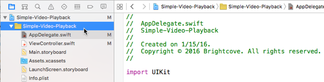
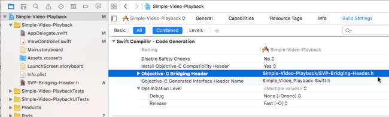

Swift: Simple Video Playback App
This tutorial will familiarize you with the basics of working with the Brightcove Player SDK for iOS by walking you through the development of a simple video playback app using Swift.
This example plays a video returned from the Brightcove Playback API, which is the latest and recommended API to retrieve content from your Video Cloud library.
For this option, you will need a Policy Key. If you are not familiar with Policy Keys, see Policy API Overview.
This example is written in Swift. If you prefer, you can view the Objective-C sample.
Get started
This example plays videos from an internal array of video files.
There are two ways to try out this sample:
Follow the steps below to get familiar with setting up an app project that uses the Brightcove Player SDK for iOS. You can view the complete code for each of the following:
- Follow the steps below to get familiar with setting up an app project that uses the Brightcove Player SDK for iOS. You can view the complete code for each of the following:
- Download the entire Xcode project for experimentation.
Download the VideoCloudBasicPlayer sample to your local system.
Note: This sample currently uses the Media API, but can be easily modified to use the Playback API.
- Run the
pod installcommand. - Open and run the newly created workspace.
Create the project
Set up a project in Xcode. Then add the SDK along with any dependencies to the project.
Set up the Xcode project
Create a new Xcode project for the app.
Start the creation of a new iOS project in Xcode. Select Create a new Xcode project.
Choose Single View Application for the template and select Next.
Set the project information as follows:
- Product Name: Simple-Video-Playback
- Organization Name: YourCompanyName
- Company Identifier: com.example-company
- Language: Swift
Choose the location where you want to save your project and create it.
- Now close the project (yes, close it — this is important!)


Add the SDK and its dependencies to your project
The easiest way to add the SDK and its dependencies to your project is to use CocoaPods.
CocoaPods is a dependency manager that adds libraries to your project. It is not required, but makes installation easier. To install CocoaPods, see the instructions on the CocoaPods site.
Note: CocoaPods version 0.39 or newer is required.
Using CocoaPods (the pod tool) on an existing Xcode project will modify the project file. You may want to make a backup before doing this.
In your project folder, create a plain text file called Podfile (no file extension).
Using a text editor, add the following lines of code to the Podfile and save it. This code does the following:
- Points to the GitHub location for the Brightcove pod specs.
- Defines the iOS platform version.
- Installs the current version of the Brightcove player SDK.
Open a Terminal session and navigate to your Simple-Video-Playback Xcode project folder.
In the Terminal session, type the command
Notice the last line, which is important — from this point on, you must open the Simple-Video-Playback.xcworkspace file in Xcode, not the Simple-Video-Playback.xcodeproj file. The
pod installcommand creates this.xcworkspacefile for your project.
source 'https://github.com/CocoaPods/Specs.git'
platform :ios, '9.0' # (or whatever version you want)
target 'Simple-Video-Playback' do
pod 'Brightcove-Player-SDK'
end
Note: The target property is used for CocoaPods version 1.0 and newer.

pod installand press Return to run the it. You should see a series of messages in the terminal indicating that the Brightcove Player SDK has been added to your project.
If you don't want to use CocoaPods , you can download the latest version of the SDK and manually add it to your project.
Import the Native SDK
Swift is compatible with Obj-C, and you can have both in the same project. Since the Brightcove Player SDK for iOS is currently written in Obj-C, we can use a bridging header file to add these libraries to our Swift project.
Create a bridging header
You will create a bridging header to import the Native SDK for iOS.
- In Xcode, open the Simple-Video-Playback.xcworkspace file.
- In the left project navigation, select the Simple-Video-Playback folder.

- In the top navigation, select File > New > File
- In the dialogue, select Header File and then the Next button.
- Name the file SVP-Bridging-Header.h and select the Create button.
- You should see the new file in your project.

- In the left navigation, select your project, open the Build Settings and navigate to Swift Compiler - Code Generation.
- Locate the Objective-C Bridging Header property, and add a value for the path to your briding header file. In this case, the value is
Simple-Video-Playback/SVP-Bridging-Header.h - In the SVP-Bridging-Header.h file, import the BCOVPlayerSDK.h file.

- Now, you are ready to code the app.
Code the video app
Create the code for a simple video playback app.
Set the audio behavior for the app
The audio session handles audio behavior at the app level. Learn more about the AVAudioSession class.
You can choose from several audio session categories and settings to customize your app's audio behavior. Choose the best audio session category for your app.
For this sample, we will use AVAudioSessionCategoryPlayback. This plays audio even when the screen is locked and with the Ring/Silent switch set to silent. To keep it simple, we will put the code for this in the App Delegate.
In your project, open the App Delegate file (AppDelegate.swift).
In the
didFinishLaunchingWithOptionsfunction, add code to set the audio session category. Make sure you import theAVFoundationframework.
Build the View Controller
Update the View Controller class to play a video from the Brightcove catalog service.
Set the playback controller delegate
This allows your app to listen and respond to video playback events.
Update the View Controller class to include the Brightcove playback controller delegate.
Customize the project with your values
Add values to access your Video Cloud account.
This example plays a video returned from the Brightcove Playback API, which is the latest and recommended API to retrieve content from your Video Cloud library. If you are not familiar with Policy Keys, see the Policy API Overview.
Below the
importdirectives, add your own values for the following:- Your Brightcove Playback API Policy Key
- Your Video Cloud Account ID
- Your Video Cloud Video ID
Declare constants and set the view
In the
ViewControllerclass, add the following :- Line 160: defines a constant, which initializes the Brightcove playback service with your Account ID and Policy Key. The
BCOVPlaybackServiceclass provides asynchronous methods for retrieving data from the Playback API. - Line 161: defines a constant for the playback controller. The
BCOVPlaybackControllerhas methods to control playback functionality. Line 162: defines a variable for the view.
- Line 160: defines a constant, which initializes the Brightcove playback service with your Account ID and Policy Key. The
Create an init function
- Create an
initfunction as follows:- Line 165: initializes a shared manager. The
BCOVPlayerSDKManagerclass is a singleton that allows you to create other objects in the SDK ecosystem. - Line 166: uses the shared manager to create a playback controller with the default view strategy.
Line 170: Optional: Sends your Video Cloud Account ID to analytics. This is only needed if you override the
BCOVVideoclass or do not use the Brightcove Playback service or catalog.Lines 172-174: set the delegate and turn on the autoadvance and autoplay features.
For details about sending data to Video Cloud Analytics, see the Using Brightcove Analytics guide.
- Line 165: initializes a shared manager. The
Configure the player
In the
viewDidLoadmethod add the following:- Lines 180-181: configure the playback controller's view.
- Line 182: adds the player view as a subview of the main view.
- Line 184: calls the
requestContentFromPlaybackServicefunction, which you will define in the next step.
Request content from the Brightcove library
In order to play back video content, you will request a playlist from the catalog service
Create a function named
requestContentFromPlaybackServiceas follows:- Line 188: returns a video object from the Playback API based on the given video id.
- Line 191: adds the video to the playback controller.
- Line 195: writes an error message if a playlist is not returned.
View the code
The View Controller is now complete. Here is the full code:
Set the playback controller delegate
This allows your app to listen and respond to video playback events.
Update the View Controller class to include the Brightcove playback controller delegate.
Customize the project with your values
Set the value of your Perform Account Id, which will be sent to Brightcove in a later step.
Below the
#importdirectives, add your own value for your Brightcove Perform Account Id.
Declare constants and set the view
In the
ViewControllerclass, add the following :- Line 79: defines a constant for the playback controller. The
BCOVPlaybackControllerhas methods to control playback functionality. Line 80: defines a variable for the view.
- Line 79: defines a constant for the playback controller. The
Create an init function
- Create an
initfunction as follows:- Line 83: initializes a shared manager. The
BCOVPlayerSDKManagerclass is a singleton that allows you to create other objects in the SDK ecosystem. - Line 84: uses the shared manager to create a playback controller with the default view strategy.
Line 88: Sends your Video Cloud Publisher ID to analytics.
Lines 90-92: set the delegate and turn on the autoadvance and autoplay features.
- Line 83: initializes a shared manager. The
Configure the player
In the
viewDidLoadmethod add the following:- Lines 97-100: create an array of video sources using url paths.
- Lines 102-103: configure the playback controller's view.
- Line 104: adds the player view as a subview of the main view.
- Line 106: adds the video array to the controller's playback queue.
- Line 107: starts playback of the first video.
Set the delivery method for video sources
Create a function that sets the delivery method for
BCOVSourcesthat belong to a video.
The rest
Create a function to handle when the playback session advances.
Create a function to set the status bar style.
View the code
The View Controller is now complete. Here is the full code:
Connect the storyboard view
Connect the Main.storyboard view with thevideoContainer property.
In the Assistant Editor, open the
Main.storyboard.In the companion view, expand the View Controller Scene and then the View Controller menu to expose the View object.
Open the
ViewController.swiftfile in the Assistant Editor.Select the open circle next to the
@IBOutletfor thevideoContainerView, and drag it to the View object to connect these components.


Manage Media Security
App Transport Security (ATS) enforces secure connections between your app and web services.
Configure App Transport Security (ATS)
With Apple's release of the iOS 9 SDK, a new feature called App Transport Security (ATS) was added.
Note: This is only an issue if you are building applications that target the iOS 9 SDK or later. Since ATS restrictions do not apply to previous versions of the iOS SDK, you can skip this section if you are working with a previous version.
You can do either:
- Build your app with ATS enabled
- You must use https to deliver your media content
- Disable ATS requirements
- You can use http to deliver your media content
To learn more, see the Working with App Transport Security (ATS) document.
If you try to build and run the app that you created by following the steps in this guide, you may encounter this error message:
App Transport Security has blocked a cleartext HTTP (http://) resource load since it is insecure.
Temporary exceptions can be configured via your app's Info.plist file.This means that ATS is enabled, but your system is not configured to meet the ATS requirements.
Run the app
The app is ready to build and run on an iPhone, iPad or the iOS Simulator. You should be able to play the videos from your playlist.

The app is ready to build and run on an iPhone, iPad or the iOS Simulator. You should be able to play the videos defined in your array.